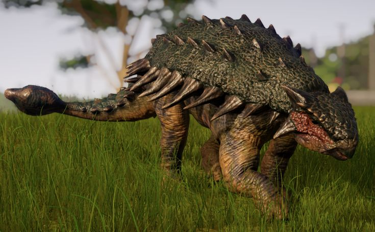

группа архозавров из клады авеметатарзалий. Динозавры возникли в триасовом периоде, между 243 млн и 233,23 млн лет назад, и стали доминирующими наземными позвоночными после триасово-юрского вымирания 201 млн лет назад; их доминирование продолжалось на протяжении остальной части мезозойской эры, в течение юрского и мелового периодов. Хотя традиционно динозавры рассматривались как полностью вымершая группа в ранге надотряда, большинство современных специалистов придерживается принципов кладистической классификации, в соответствии с которыми птицы являются ныне живущими оперёнными динозаврами из клады теропод, возникшими во время верхнеюрской эпохи, либо в меловом периоде (в зависимости от определения таксона[a]), и, в отличие от всех остальных динозавров, пережившими мел-палеогеновое вымирание 66 млн лет назад. Условно всех динозавров, за исключением птиц, называют нептичьими динозаврами.
| ящеротазовым | птицетазовым |
|---|---|
| К ящеротазовым относятся тероподы — хищные динозавры и завроподоморфы — растительноядные динозавры с длинными шеями. | Птицетазовые динозавры травоядны — это рогатые цераподы и четвероногие тиреофоры с костными пластинами на спине и хвосте. |